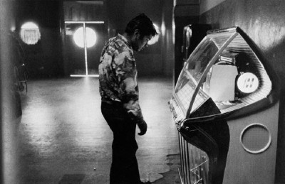
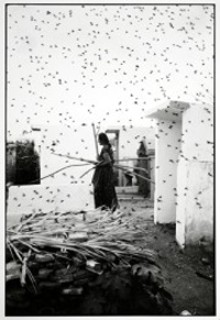

There was never a more prolific photographer than Robert Frank. From 1941, he worked as a commercial photographer in Zurich, Basel and Geneva.In 1947, he found a job as a fashion photographer in the US. He used his 35mm Leica, unconventional at the time. Between 1950 and ’59 he turned his attention to street photography and photojournalism.This is where he became most famous. The Guggenheim Fellowship allowed him to travel the country, resulting in his most famous work: The Americans.
Born in Mexico City, Graciela Iturbide studied filmmaking at the Centro Universitario de Estudios Cinematográficos between 1969 and 1972, and worked as an assistant to photographer Manuel Alvarez Bravo, who stimulated her interest in photography. She met to Henri Cartier-Bresson while traveling in Europe, and in 1978, was one of the founding members of the Mexican Council of Photography. Besides Cartier-Bresson and Alvarez Bravo, Tina Modotti was in important influence on Iturbide. A major exhibition of her work, "External Encounters, Internal Imaginings: Photographs of Graciela Iturbide," was presented at the San Francisco Museum of Modern Art, in addition to retrospectives at the Museo de Arte Contemporáneo de Monterrey in Mexico, and at the Philadelphia Museum of Art. A monograph on her work, Graciela Iturbide: Images of the Spirit (1996), accompanied her Philadelphia show.
Iturbide's exquisite high-contrast black-and-white prints convey the starkness of life for many of her subjects. Traveling through Mexico, Ecuador, Venezuela, Panama, and the Mexican community of East Los Angeles, Iturbide documents the uneasy cohabitation of ancient cultural rituals and contemporary adaptations and interpretations. One of her particular interests has been the role of women, and since 1979 she has photographed the Zapotec Indians of Juchitán, Oaxaca, among whom women are commonly accorded places of power, and stereotypical gender roles are frequently subverted. Iturbide uses photography to try to understand Mexico in its totality, as a combination of indigenous practices, and imported and assimilated Catholic religious practices, and foreign economic trade.Meredith Fisher Handy et al. Reflections in a Glass Eye: Works from the International Center of Photography Collection, New York: Bulfinch Press in association with the International Center of Photography, 1999, p. 219.
